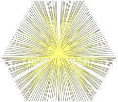

Kristian Georgiev
PhD candidate, MIT EECS
S.B. MIT '21
I am a second-year PhD student advised by Aleksander Mądry. I am interested in the science of deep learning and deep learning for science. I also like thinking about adversarial robustness and privacy.
I obtained a joint degree in Math and Computer Science from MIT. During that time, I was fortunate to be advised by Asuman Ozdaglar as a SuperUROP scholar working on equivariance in deep learning. Previously, I was at QuantCo and Apple.
I grew up in Bulgaria. In my free time, I enjoy playing soccer and chess. At MIT, I have led the AI@MIT club.
This website was last updated on .
- krisgrg@mit.edu
- Twitter | Google Scholar | GitHub
Manuscripts / Preprints
* denotes equal contribution; authors are ordered alphabetically unless they're not
-
TRAK: Attributing Model Behavior at Scale
[arxiv]
[blog post]
[python package]
[website]
Sung Min Park*, Kristian Georgiev*, Andrew Ilyas*, Guillaume Leclerc, Aleksander Madry
Publications
-
Privacy Induces Robustness: Information-Computation Gaps and Sparse
Mean Estimation
[arxiv]
Kristian Georgiev, Samuel B. Hopkins
NeurIPS 2022 -
Implicit Bias of Linear Equivariant Networks
[arxiv]
Hannah Lawrence, Kristian Georgiev, Andrew Dienes, Bobak T. Kiani
ICML 2022 -
On the Convergence Theory of Debiased Model-Agnostic
Meta-Reinforcement Learning
[arxiv]
Alireza Fallah, Kristian Georgiev, Aryan Mokhtari, Asuman Ozdaglar
NeurIPS 2021
Misc Projects
a mix of class projects and stuff just for funIn this work we analyze the behaviour of the last iterate of the Extragradient (EG) and Proximal Point (PP) algorithms on smooth variationally coherent problems1 . In particular, we examine a relaxation of the conditions in Golowich et al. (2020), who show a rate of \(\mathcal{O}\left( 1 / \sqrt{T} \right)\) for both algorithms when the problem is convex- concave. We show that best iterate convergence at a rate of \(\mathcal{O}\left( 1 / \sqrt{T} \right)\) naturally carries over to to variationally coherent problems but key monotonicity properties are lost.
Golowich, N., Pattathil, S., Daskalakis, C., and Ozdaglar, A. Last iterate is slower than averaged iterate in smooth convex-concave saddle point problems, 2020.
Zhou, Z., Mertikopoulos, P., Bambos, N., Boyd, S., and Glynn, P. W. Stochastic mirror descent in variationally coherent optimization problems, NeurIPS 2017.
Gradient based meta-learning has established itself as a promising research direction for prob- lems in few-shot learning: data-constrained training on an ensemble of tasks with quick adapta- tion on a task, unseen during training. Until recently, little has been known about the success of model-agnostic meta-learners (MAMLs), which are particularly useful to few shot learning. We shed light on the phenomenon of feature reuse in MAMLs through empirical visualizations of the loss landscapes of a variety of tasks. We develop meta-visualization: an efficient framework for visualization of any gradient based meta learning algorithm that can be used to generate hypotheses and guide model designs. The contributions of our work vary from augmenting research in the field of meta learning to explaining the success of the method through geometrical lens.
We explore the hypothesis that robust training helps to disentangle representations by looking at the behavior of individual units of a robustly trained neural network through network dissection. We observe that to a large extent, robust models explain each high-level concept with fewer units than the equivalent non-robust models.
The minimum \(k\)-cut problem is a natural generalization of the famous minimum cut problem, where we seek a cut that partitions a graph \(G(V,E)\) into \(k\) components. Karger et al. (1996) develop a randomized algorithm and provide an analysis which shows their algorithm provides a solution with high probability in \(\tilde{\mathcal{O}}\left( |V|^{2(k-1)} \right)\) time. A reduction to the maximum-weight clique problem gives a lower bound of \(\mathcal{\Omega}\left( |V|^{(1-o(1))k} \right)\). Until recently, the gap in the exponent was not explained. Confirming previous experimental results, Anuram Gupta et al. (2020) provide a refined analysis of the Karger-Stein algorithm that shows it is tight up to lower order terms. We survey the techniques employed in their analysis, together with other recent analyses of algorithms of similar flavour; this includes ideas from extremal set theory and stochastic processes.
Anupam Gupta et al. “Optimal Bounds for the k-cut Problem”. In: arXiv preprint arXiv:2005.08301 (2020).
David R. Karger and Clifford Stein. “A New Approach to the Minimum Cut Problem”. In: J. ACM 43.4 (July 1996), pp. 601–640.
Wikipedia, Karger's Algorithm https://en.wikipedia.org/wiki/Karger%27s_algorithm

Continuous time Markov processes are heavily used to approximate solutions to parabolic and elliptic partial differential equations. In this paper, we examine the role of the Feynman-Kac formula in the aforementioned approximation. We present the classical results for linear parabolic equations. Then we generalize the method for stochastic processes with discrete jump discontinuities. Via Fokker-Planck's equation we show that this class of SDEs is the codomain of a more general class of partial integro-differential equations under Feynman-Kac's transformation. We utilize a jump-adapted Euler-Maruyama scheme to approximate the evolution of jump-diffusions. Finally, we analyze the weak and strong convergence properties of the implemented methods.
Paper 
The paper deals with finding unions of lines in \(\mathbb{F}^n_{p^{2k}}\) which obey the Wolff axiom and have minimal size. We provide an extension of the constructions for \(\mathbb{F}^3_{p^{2k}}\), obtained by Tao in 2002, to a construction for \(\mathbb{F}^n_{p^{2k}}\). We determine the size of the union of lines in our construction in \(\mathbb{F}^n_{p^{2k}}\) to be \(\mathcal{O}\left(p^{1.6kn}\right)\). We prove that our construction obeys the Wolff axiom up to a heuristically negligible number of lines.
The project belongs to the field of topology. More specifically, the identification (gluing) of the edges of \(2n\)-gons is analyzed. We prove that the resulting manifold is a topological surface. A classification of compact surfaces is presented. A conjecture regarding the number of ways to obtain an arbitrary manifold from \(2n\)-gon is constructed. The author’s contributions consist of constructing a conjecture regarding the number of ways to obtain an arbitrary manifold from \(2n\)-gon, as well as computing the number of configurations of the edges of a \(2n\)-gon forming a sphere, a torus, a \(\mathbb{R}P^2\) and a Klein bottle, thus proving the conjecture true for the mentioned manifolds.
I started developing this project in the summer of 2014 at HSSIMI - a summer research school held at Blagoevgrad, Bulgaria. I worked under the guidance of Katerina Velcheva from Stanford. Afterwards, I continued working on the topic under the guidance of Prof. Kopanov from Plovdiv University. The project was presented at the 27th edition of EUCYS, the largest science fair for high school students in Europe.
In college, I played lots of foosball. And so did a lot of my friends. Being a competitive bunch, we created FoosRank - a ranking system for foosball games. The algorithm is a slight modification of the ELO system, used in, e.g., chess. FoosRank also keeps the score during the game and shows each user their game history and ranking over time.
Teaching
- Introduction to Deep Learning (6.S191) teaching assistant IAP (Winter) 2020 IAP (Winter) 2021
- Introduction to Inference (6.008) lab assistant Fall 2019
- Introduction to Machine Learning (6.036) lab assistant Spring 2019
- Abstract Algebra I (18.701) grader Fall 2018